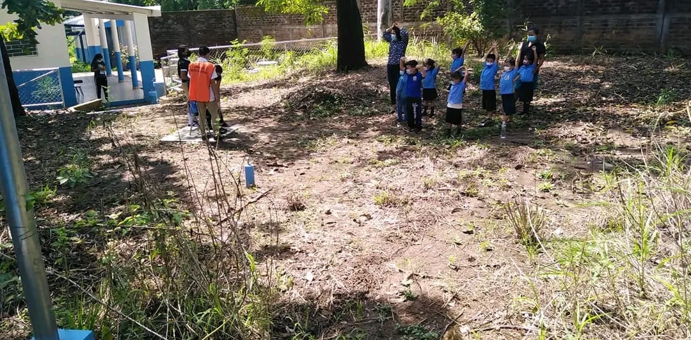
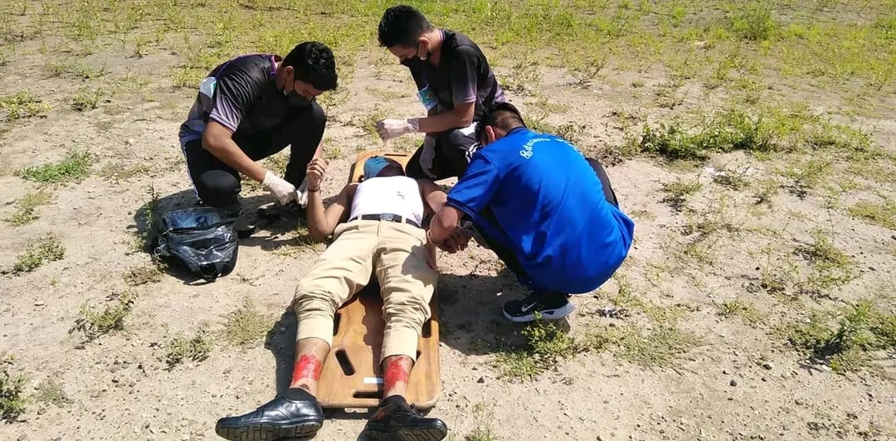
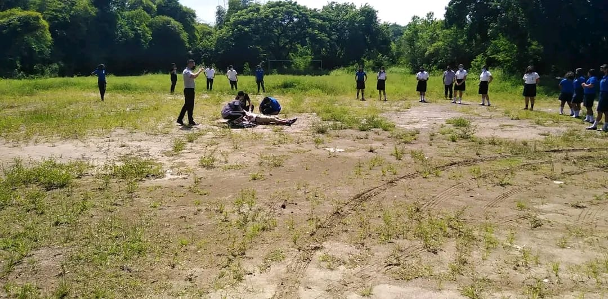
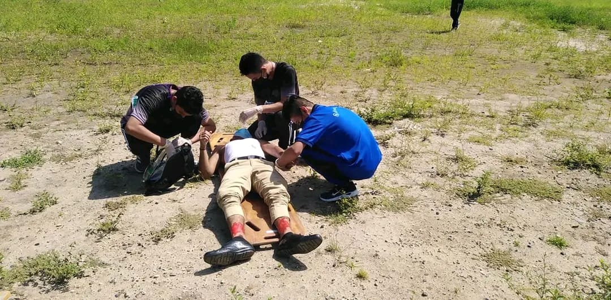
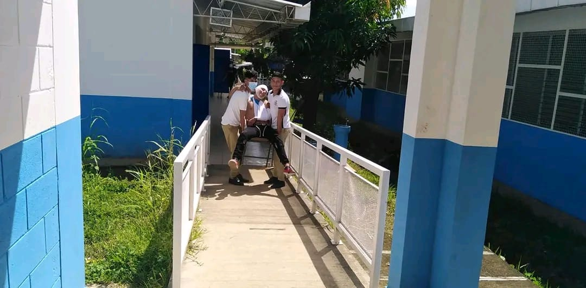

Estudios Basicos desde primer grado hasta noveno,
Bachillerato Técnico en Diseño Textil. Aprenderás: Diseño
Computarizado, Crear tu página Web. Contabilidad, Crear Patrones de Prendas de Vestir, etc. Matricula abierta
Simulacro de Terremoto en nuestro Complejo Educativo, siguiendo líneamientos del Ministerio de Educación.





Alumnos de Tecer Año de Bachillerato Técnico Vocacional, Opción Diseño Textil elaborando Patrones de Pantalones y Conjuntos de Piyamas.